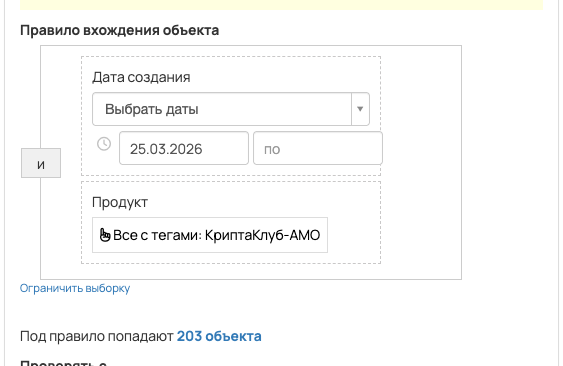
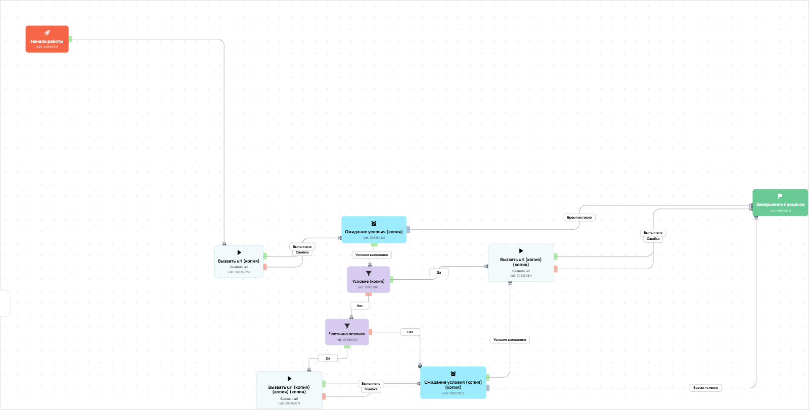

[AMO] [ED] Запуск КриптоКлуб 90557
- ID процесса:
2298039 - Объект: Заказы
- Статус: Ожидание событий
- Внутренняя страница: 2298039. [AMO] [ED] Запуск КриптоКлуб 90557
- GetCourse: Карточка | Схема процесса
Скриншоты процесса


Коротко для заказчика
- Главное: В процесс попадают заказы по всем продуктам с тегом «КриптаКлуб-AMO».
- Дальше он передает данные как: Оплаты и заказы.
- Связанных баз Vakas: 1.
Понятное описание процесса
- Процесс работает с объектом GetCourse: Заказы. Текущий статус процесса: Ожидание событий.
- На вход попадают данные так: В процесс попадают заказы по всем продуктам с тегом «КриптаКлуб-AMO».
- Техническое правило входа в GetCourse: Дата создания (дата: 25.03.2026 - ...) и Продукт (все с тегами: КриптаКлуб-AMO).
- Внутри схемы есть дополнительные проверки/ожидания: 4. Основные блоки: «Ожидание условия (копия)»; «Условие (копия)»; «Ожидание условия (копия) (копия)»; «Частично оплачен».
- Дальше процесс делает прямые вызовы Vakas: 3. Напрямую задействованы базы: 90557.
- Передача: 90557. База 90557: Оплаты и заказы. Передаются параметры:
number,id,order_id,positions,costMoney,leftCostMoney,payedMoney,status,paymentLink,firstNameи другие. - Передача: 90557. База 90557: Оплаты и заказы. Передаются параметры:
number,id,order_id,positions,costMoney,leftCostMoney,payedMoney,status,paymentLink,firstNameи другие. - Что происходит в amoCRM: На входе в этап КРИПТОКЛУБ -> Новый заказ [76504486] база ищет дубль и может взять старую сделку только из заранее разрешенных этапов.
Ход процесса в GetCourse
- Схема состоит из 15 блоков и 27 переходов.
- По типам: стартов 1, условий/ожиданий 4, вызовов URL 9, изменений полей 0, финалов 1.
Блоки процесса: что делают и зачем нужны:
- Блок
39835973«Начало работы» (старт). Что делает: Запускает выполнение схемы для объекта, который попал под правило входа процесса. Зачем нужен: Нужен как точка входа: от него GetCourse начинает движение объекта по схеме. Дальше: если результат «Выполнено», идет в «Вызвать url (копия)». - Блок
39835976«Вызвать url (копия)» (вызов URL). Что делает: Передает в Vakas: 90557. База 90557, канал «Оплаты и заказы» (GET); параметры:number,id,order_id,positions,costMoney,leftCostMoney,payedMoney,status,paymentLink,firstName,lastName,name,email,phoneи другие; timeout 300 сек. Зачем нужен: Нужен, чтобы передать подходящий объект в 90557. База 90557; дальше На входе в этап КРИПТОКЛУБ -> Новый заказ [76504486] база ищет дубль и может взять старую сделку только из заранее разрешенных этапов. Дальше: если результат «Ошибка», идет в «n8n fail после Вызвать url (копия) #39835976»; если результат «Выполнено», идет в «n8n success после Вызвать url (копия) #39835976». - Блок
43525935«n8n success после Вызвать url (копия) #39835976» (вызов URL). Что делает: Вызывает внешний URL: testn8n.easydrafting.ru/webhook/gc-vakas-retry-events (POST); параметры:event,clientED,gcDomain,action,process_id,process_name,entity_type,object_id,order_id,user_id,name,email,phone,error_message; timeout 10 сек. Зачем нужен: Нужен, чтобы процесс GetCourse передал данные во внешний сервис testn8n.easydrafting.ru. Дальше: если результат «Ошибка», идет в «Ожидание условия (копия)»; если результат «Выполнено», идет в «Ожидание условия (копия)». - Блок
39835982«Ожидание условия (копия)» (ожидание условия). Что делает: Останавливает объект в ожидании, пока выполнится условие: Есть платеж. Зачем нужен: Нужен, чтобы не отправлять объект раньше времени: процесс ждет нужное событие, заказ, сегмент или другое условие. Дальше: если результат «Время истекло», идет в «Завершение процесса»; если результат «Условие выполнено», идет в «Условие (копия)». - Блок
39835977«Завершение процесса» (завершение). Что делает: Завершает ветку процесса после выполненных проверок и действий. Зачем нужен: Нужен, чтобы закрыть текущую ветку и не гонять объект по процессу повторно. Дальше переходов нет: это конечная точка ветки. - Блок
39835983«Условие (копия)» (условие). Что делает: Проверяет условие: Оплачен (да). Зачем нужен: Нужен, чтобы разделить поток: подходящих пользователей/заказы отправить дальше, неподходящих перевести на другую ветку или завершить. Дальше: если результат «Нет», идет в «Частично оплачен»; если результат «Да», идет в «Вызвать url (копия) (копия)». - Блок
39835984«Вызвать url (копия) (копия)» (вызов URL). Что делает: Передает в Vakas: 90557. База 90557, канал «Оплаты и заказы» (GET); параметры:number,id,order_id,positions,costMoney,leftCostMoney,payedMoney,status,paymentLink,firstName,lastName,name,email,phoneи другие; timeout 300 сек. Зачем нужен: Нужен, чтобы передать подходящий объект в 90557. База 90557; дальше На входе в этап КРИПТОКЛУБ -> Новый заказ [76504486] база ищет дубль и может взять старую сделку только из заранее разрешенных этапов. Дальше: если результат «Ошибка», идет в «n8n fail после Вызвать url (копия) (копия) #39835984»; если результат «Выполнено», идет в «n8n success после Вызвать url (копия) (копия) #39835984». - Блок
43525944«n8n success после Вызвать url (копия) (копия) #39835984» (вызов URL). Что делает: Вызывает внешний URL: testn8n.easydrafting.ru/webhook/gc-vakas-retry-events (POST); параметры:event,clientED,gcDomain,action,process_id,process_name,entity_type,object_id,order_id,user_id,name,email,phone,error_message; timeout 10 сек. Зачем нужен: Нужен, чтобы процесс GetCourse передал данные во внешний сервис testn8n.easydrafting.ru. Дальше: если результат «Ошибка», идет в «Завершение процесса»; если результат «Выполнено», идет в «Завершение процесса». - Блок
43525946«n8n fail после Вызвать url (копия) (копия) #39835984» (вызов URL). Что делает: Вызывает внешний URL: testn8n.easydrafting.ru/webhook/gc-vakas-retry-events (POST); параметры:event,clientED,gcDomain,action,process_id,process_name,entity_type,object_id,order_id,user_id,name,email,phone,error_message; timeout 10 сек. Зачем нужен: Нужен, чтобы процесс GetCourse передал данные во внешний сервис testn8n.easydrafting.ru. Дальше: если результат «Ошибка», идет в «Ожидание условия (копия) (копия)»; если результат «Выполнено», идет в «Ожидание условия (копия) (копия)». - Блок
39835985«Ожидание условия (копия) (копия)» (ожидание условия). Что делает: Останавливает объект в ожидании, пока выполнится условие: Оплачен (да). Зачем нужен: Нужен, чтобы не отправлять объект раньше времени: процесс ждет нужное событие, заказ, сегмент или другое условие. Дальше: если результат «Время истекло», идет в «Завершение процесса»; если результат «Условие выполнено», идет в «Вызвать url (копия) (копия)». - Блок
39836016«Частично оплачен» (условие). Что делает: Проверяет ветвление «Частично оплачен», но текст условия в дампе не расшифрован. Зачем нужен: Нужен, чтобы разделить поток: подходящих пользователей/заказы отправить дальше, неподходящих перевести на другую ветку или завершить. Дальше: если результат «Нет», идет в «Ожидание условия (копия) (копия)»; если результат «Да», идет в «Вызвать url (копия) (копия) (копия)». - Блок
39835987«Вызвать url (копия) (копия) (копия)» (вызов URL). Что делает: Передает в Vakas: 90557. База 90557, канал «Оплаты и заказы» (GET); параметры:number,id,order_id,positions,costMoney,leftCostMoney,payedMoney,status,paymentLink,firstName,lastName,name,email,phoneи другие; timeout 300 сек. Зачем нужен: Нужен, чтобы передать подходящий объект в 90557. База 90557; дальше На входе в этап КРИПТОКЛУБ -> Новый заказ [76504486] база ищет дубль и может взять старую сделку только из заранее разрешенных этапов. Дальше: если результат «Ошибка», идет в «n8n fail после Вызвать url (копия) (копия) (копия) #39835987»; если результат «Выполнено», идет в «n8n success после Вызвать url (копия) (копия) (копия) #39835987». - Блок
43525950«n8n success после Вызвать url (копия) (копия) (копия) #39835987» (вызов URL). Что делает: Вызывает внешний URL: testn8n.easydrafting.ru/webhook/gc-vakas-retry-events (POST); параметры:event,clientED,gcDomain,action,process_id,process_name,entity_type,object_id,order_id,user_id,name,email,phone,error_message; timeout 10 сек. Зачем нужен: Нужен, чтобы процесс GetCourse передал данные во внешний сервис testn8n.easydrafting.ru. Дальше: если результат «Ошибка», идет в «Ожидание условия (копия) (копия)»; если результат «Выполнено», идет в «Ожидание условия (копия) (копия)». - Блок
43525952«n8n fail после Вызвать url (копия) (копия) (копия) #39835987» (вызов URL). Что делает: Вызывает внешний URL: testn8n.easydrafting.ru/webhook/gc-vakas-retry-events (POST); параметры:event,clientED,gcDomain,action,process_id,process_name,entity_type,object_id,order_id,user_id,name,email,phone,error_message; timeout 10 сек. Зачем нужен: Нужен, чтобы процесс GetCourse передал данные во внешний сервис testn8n.easydrafting.ru. Дальше: если результат «Ошибка», идет в «Частично оплачен»; если результат «Выполнено», идет в «Частично оплачен». - Блок
43525938«n8n fail после Вызвать url (копия) #39835976» (вызов URL). Что делает: Вызывает внешний URL: testn8n.easydrafting.ru/webhook/gc-vakas-retry-events (POST); параметры:event,clientED,gcDomain,action,process_id,process_name,entity_type,object_id,order_id,user_id,name,email,phone,error_message; timeout 10 сек. Зачем нужен: Нужен, чтобы процесс GetCourse передал данные во внешний сервис testn8n.easydrafting.ru. Дальше: если результат «Ошибка», идет в «Начало работы»; если результат «Выполнено», идет в «Начало работы».
Что именно входит в процесс
- В процесс попадают заказы по всем продуктам с тегом «КриптаКлуб-AMO».
Как именно настроено правило
- В amoCRM процесс ориентирован на воронки: «КриптоКлуб».
- В описании зафиксированы этапы обработки: «Новый заказ: этап "Новый заказ"» и «ч/о: этап "частично оплачен"».
- По правилу также учитываются ограничения: «дата создания: с 25.03.2026».
Куда и как передается дальше
| База Vakas | Что передается | Этап в amoCRM | Что происходит со сделкой |
|---|---|---|---|
| 90557. База 90557 | Оплаты и заказы | КРИПТОКЛУБ -> Новый заказ [76504486] | На входе в этап КРИПТОКЛУБ -> Новый заказ [76504486] база ищет дубль и может взять старую сделку только из заранее разрешенных этапов. |